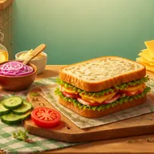
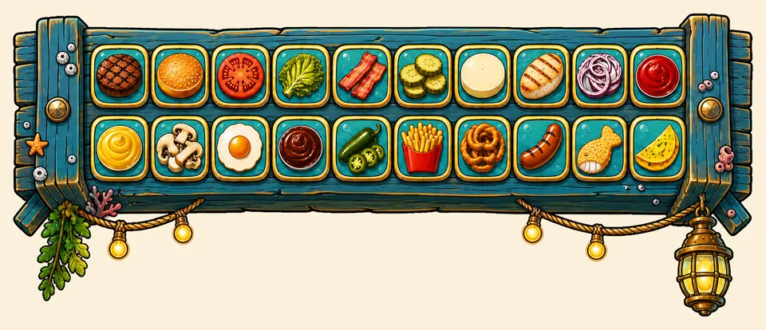
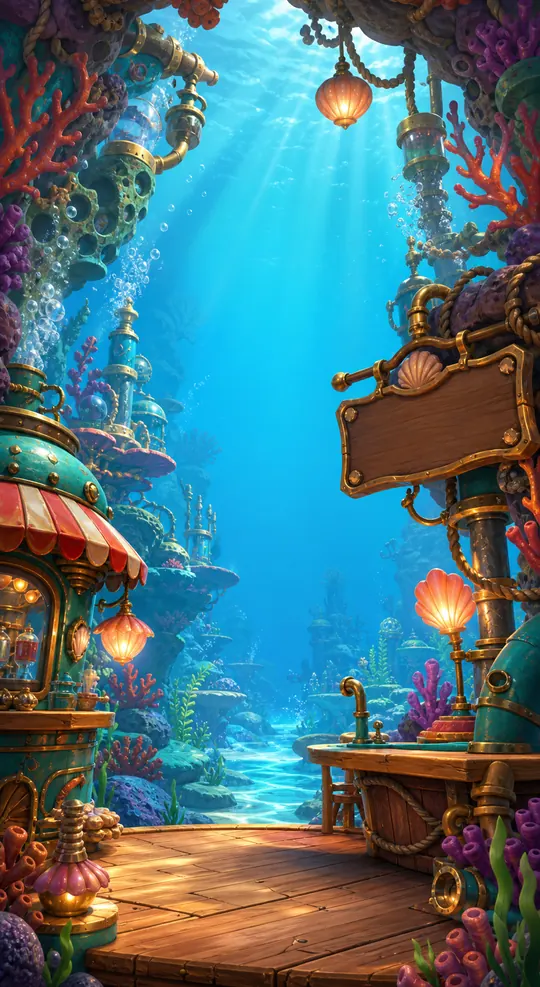
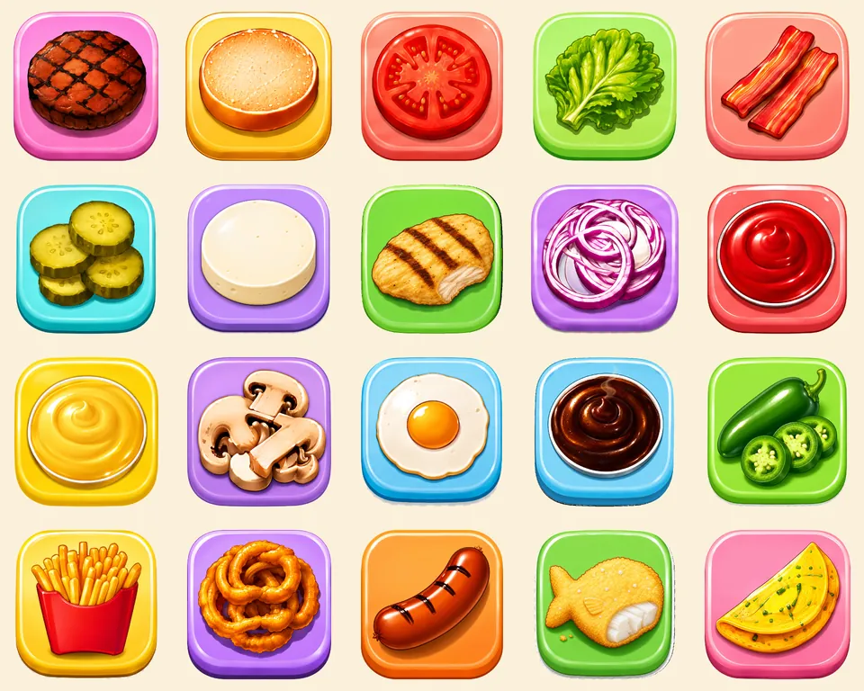

Four stacking modes
Press Rush, Round 3D, Balance Tower 3D and Slice & Fit 3D each change what a good placement means. A mode-select screen opens every run.

Sandwich StackWillowinWorlds game pageTap to stack. Build the sandwich.
A stacking arcade prototype with twenty ingredients, illustrated backgrounds and four modes: Press Rush, Round 3D, Balance Tower 3D and Slice & Fit 3D.
Four stacking modes, twenty ingredients, recipe orders, sound effects and saved scores are in the Unity project, and there is no public build yet.
Choose a filling from the ingredient panel. The recipe rail shows which sandwich the current order asks for.
The layer moves above the stack and one tap locks it in. A close match keeps the full size and a miss trims the layer.
Each mode sets its own rule: size, orbit, balance or a limited number of cuts. A miss, a toppled tower or no cuts left ends the run.
Press Rush, Round 3D, Balance Tower 3D and Slice & Fit 3D each change what a good placement means. A mode-select screen opens every run.
Overlap, weight and wind feed a stability gauge that reads STABLE, WOBBLE or DANGER. A toppled tower ends the run.
Swipe to cut a layer down with a limited number of cuts, then fit it onto the target ring.
Twenty ingredients sit in a picker panel, and a recipe rail shows the order to follow from a 166-recipe catalog.
Two ten-frame illustrated sequences, an airborne city and an underwater town, blend into each other as the stack grows.
Best scores and layer counts are saved per mode on the device, and seven sound effects are in the build.
These are goals for the project, not release dates.
Art and interface assets from the Unity project, not gameplay captures.



A tap-to-place stacking arcade game. You build sandwiches layer by layer in four modes: Press Rush, Round 3D, Balance Tower 3D and Slice & Fit 3D. The stacking idea is shared with the studio's Burger Stack; here the layers are sandwich ingredients and three of the modes are 3D.
It is a prototype. The project is set up for Android and iOS, but there is no public build, store page or release date yet.
Follow WillowinWorlds on the social channels linked on this page, or email willowinworlds@gmail.com to ask for updates on Sandwich Stack.
Voting will open on the studio's channels, so following WillowinWorlds is the way to take part.